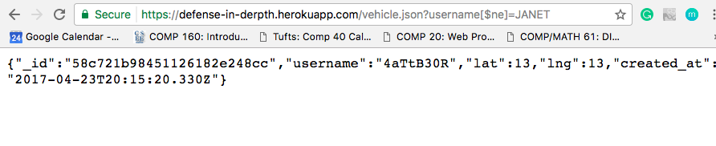

This is a security and privacy assessment of Ming Chow's Not Uber server. This server contains a database of the most recent information of vehicles and passengers of the Black Car service. It also has a few APIs that developers could use, including a POST /sumit route, a GET /vehicle.json route, and a GET / route.
For this assignment, I enlisted the white box testing technique. Unfortunately, due to the fact that I didn't know my customer would be Ming, I already carefully looked over his source code before I began any testings. Therefore, it was not feasible for me to do any unbiased black box testing.
Since there are three APIs, I focused on hacking one API at a time. I mostly used curl to run my hacks, but sometimes I write short and sweet JavaScript embedded in an HTML when I get lazy running curls .
Out of the three vulnerabilities I found, two of them are XSS attacks and one of them is a MongoDB injection. However, all three problems inherently lie in the fact that Ming did not validate the input coming from the client side. These security and privacy loopholes allow me to do all sorts of weird stuff imaginable with JavaScript when user opens https://defense-in-derpth.herokuapp.com, grants me access to information I should not have, and permit me to alter information stored in MongoDB.
What? This first hack is a simple XSS via the POST /submit API.
Where? The problem is that when the POST /submit API receives URL encoded parameters, it does not verify that the username is indeed a string. Given this, and because of CORS, it allows us to initiate XSS attacks by sending scripts to the server via POST /submit . When the page https://defense-in-derpth.herokuapp.com is opened via GET /, the script will be rendered and ran.
Severity. Since this is a XSS vulnerability, I believe the stakes are quite high. Imagine all the things we can do to if we get to run any sort of script we'd like!
Description. Knowing that it permits CORS, I knew that XSS had to be possible. To find which loophole I could take advantage of, I scanned through Ming's code and took advantage of the fact that the username is not validated anywhere.
Proof. To illustrate this, I sent the following request to the server:
$ curl --data "username=%3Cscript%3Ealert%28%22Youre%20Hacked%22%29%3C%2Fscript%3E&lat=89&lng=122" -X POST https://defense-in-derpth.herokuapp.com/submit
They information under the username field is really the following snippet encoded in URL:
<script>alert("Youre Hacked")</script>
When you open https://defense-in-derpth.herokuapp.com, this piece of code gets executed immediately, as shown below.
Resolution. Resolving this is easy. Just validate the the username is a string, and not a piece of code. Concretely, there are several ways to do this. We could use ejs , which automatically does the string validation for you, or scan for the appearence of <script>. Alternatively, we could get rid of CORS and find a safer, more reliable way to serve the server-side.
What? This is another XSS attack, and is quite similar to the one previously mentioned. However, this one utilizes both the POST /submit API and the GET / route, and allows us to alter information stored in the database. Concretely, we can use an XSS to change the lat and lng fields of every known vehicle or passengers.
Where? The vulnerability is essentially the same as above. The only difference is that we can hide a XSS attack within another XSS attack, where the second XSS attack can do things such as alter the information stored in the database when the webpage https://defense-in-derpth.herokuapp.com is opened.
Severity. The problem is medicore in terms of severity because while it can protentially disrupt the data of any known vehicle and passenger as soon as the webpage is opened, the fact that the server allows CORS in the first place gives anyone the ability to do that.
However, once this code is kept in the database, it will always be executed everytime the homepage is opened. This means that the data will always be reset. This could pose potential dangers to the users of the Black Car service. After all, what's good in a server that keeps losing data? Description. We send the following curl to POST /submit:
curl --data "username=%3Cscript%3E%0Avar%20req%20%3D%20new%20XMLHttpRequest()%3B%0Areq.open(%22POST%22%2C%20%22https%3A%2F%2Fdefense-in-derpth.herokuapp.com%2Fsubmit%22%2C%20true)%3B%0Areq.setRequestHeader(%22Content-type%22%2C%20%22application%2Fx-www-form-urlencoded%22)%3B%0Areq.send(%22username%3DJANET%26lat%3D3%26lng%3D3%22)%3B%0A%3C%2Fscript%3E&lat=9&lng=9" -X POST https://defense-in-derpth.herokuapp.com/submit
The username field is the following snippet encoded in JavaScript:
<script>
var req = new XMLHttpRequest();
req.open("POST", "https://defense-in-derpth.herokuapp.com/submit", true);
req.setRequestHeader("Content-type", "application/x-www-form-urlencoded");
req.send("username=JANET&lat=3&lng=3");
</script>
After opening the webpage https://defense-in-derpth.herokuapp.com, this POST request will be sent and the lat and lng attributes of the vehicle JANET will be updated both to 3.
Proof. The following is a screenshot of the GET /vehicle.json after running the curl and opening the webpage to execute the embedded JS script. You can see that the lat and lng attributes have been updated to 3.
Resolution Same as the first hack.
What? The last hack is a MongoDB injection hack. When sending a GET request to /vehicle.json, we're supposed to provide the name of an vehicle and it will return the data of that vehicle, if there are anything, or nothing. However, if we tweak the paramters a bit, we can take advantage of the MongoDB queries and expose other information stored in the database.
Where? The vulnerability is default in ExpressJS and the body-parser module. The string username[$gt]= is a special syntax that will match all data with username greater than the provided username.
Severity. I don't think this vulnerabililty is too bad. After all, the client has access to all known vehicles already.
Description. This seems like a vulnerability that comes with MongoDB if you use ExpressJS and body-parser.
Proof. Going to the following url will return information on a vehicle that is not JANET
https://defense-in-derpth.herokuapp.com/vehicle.json?username[$ne]=JANET

Resolution. Ditch body-parser and use some other parsing middlewear, or be extra careful when validating input from the client.
POST requests.
http://blog.websecurify.com/2014/08/hacking-nodejs-and-mongodb.html
https://excess-xss.com/